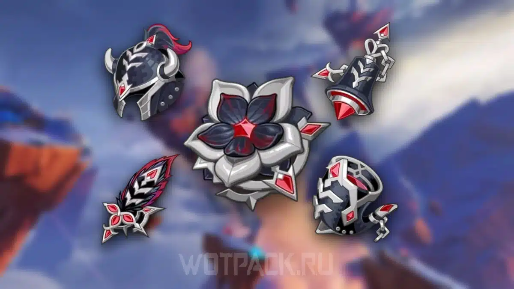
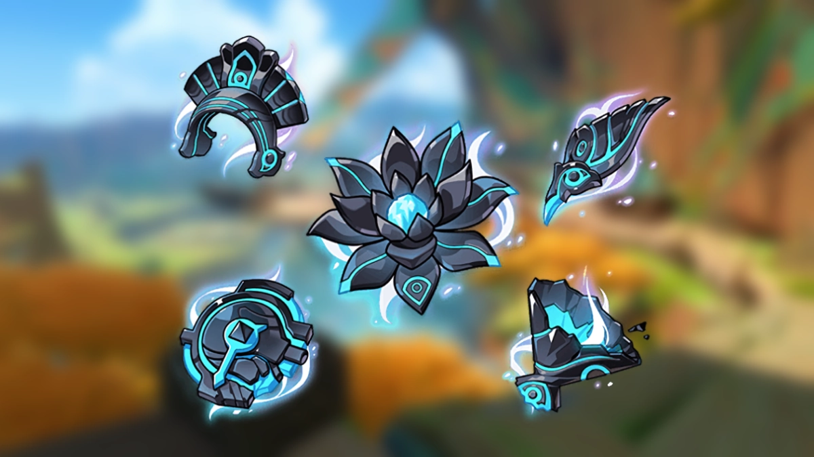

Общая информация о Варессе
✦ Сборка Варессы ✦
✦Артефакты:
Самый лучший вариант №1 — «Клятва долгой ночи»

Этот комплект специально усиливает атаки в падении. При полном наборе бонус к урону атак в падении может достигать 100%. Хорошо подходит Варессе, потому что её обычная комбинация постоянно активирует бонусы комплекта.
Вариант № 2 — «Обсидиановый фолиант»

Основные характеристики артефактов
| Артефакт | Что выбирать |
| Часы | Сила атаки % |
| Кубок | Бонус Электро-урона % |
| Шапка | Крит. урон или крит. шанс |
В дополнительных характеристиках ищите критический урон, критический шанс и силу атаки %.
Если используте «Обсидиановый фолиант», учитывай его бонус к критическому шансу, чтобы не набирать слишком много лишнего.
✦Оружие
1. Переливающиеся чаяния
2. Песнь странника
3. Сверкание чистых вод
✦Таланты
3. Таланты
| Приоритет | Талант | Уровень |
| 1 | Обычная атака | 8–10 |
| 2 | Взрыв стихии | 8–10 |
| 3 | Элементальный навык | 6–8 |
✦ История Варессы ✦
✦ Девочка, которая мечтала стать героем
Варесса родилась в Натлане, в племени Удела Благодатных Земель. Её родители владели фруктовым садом, поэтому детство девочки проходило спокойно и беззаботно. Она любила слушать истории о героях, есть вкусные фрукты и проводить время со своим другом-саурианом Вананой.
С ранних лет Варесса обладала необычайной физической силой. Но однажды её жизнь изменилась: когда ей было всего пять лет, на сад напали монстры Бездны. Варесса смогла отбросить одного из них, однако, увидев остальных, испугалась и расплакалась. Её отец защитил семью, а прибывшие воины помогли справиться с угрозой.
Увидев разрушенный сад и раненых людей, Варесса решила стать настоящим героем, который сможет защищать других от подобных опасностей.
Варесса отправилась учиться боевым искусствам. Благодаря своей невероятной силе она смогла убедить опытных бойцов обучать её, хотя поначалу они не воспринимали её всерьёз.
Она много тренировалась, пробовала разные боевые стили и представляла себя героями из любимых историй. Перед сражениями Варесса надевала маску и выкрикивала героические фразы, чтобы справиться со страхом. В бою она полагалась прежде всего на свою силу, решительность и стремительные атаки.
Со временем Варесса стала сильной воительницей, но ей ещё предстояло понять, что на самом деле означает быть героем.
После великих событий в Натлане Варесса начала глубже задумываться о своей мечте. Она поняла, что стремилась стать героем не ради славы и признания. Ей хотелось обрести смелость, чтобы защищать людей и позволять им жить спокойно и счастливо.
Варесса также осознала, что маска помогала ей скрывать собственный страх, но не избавляла от него. Поэтому она решила учиться сражаться, оставаясь самой собой, и стала усерднее тренироваться под руководством Иансан.
Варесса — воительница Удела Благодатных Земель и хозяйка фруктового сада. Она добрая, спокойная, любит вкусную еду и порой бывает удивительно расслабленной. Но когда возникает опасность, её сила становится серьёзным преимуществом.
Для Варессы быть героем — значит не искать славы, а использовать свою силу, чтобы защищать других. И теперь она стремится доказать, что для этого ей не нужна маска: достаточно быть самой собой. 💜